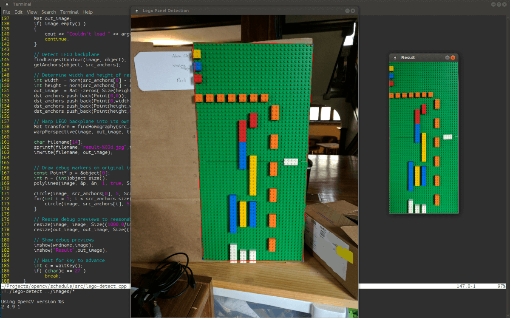
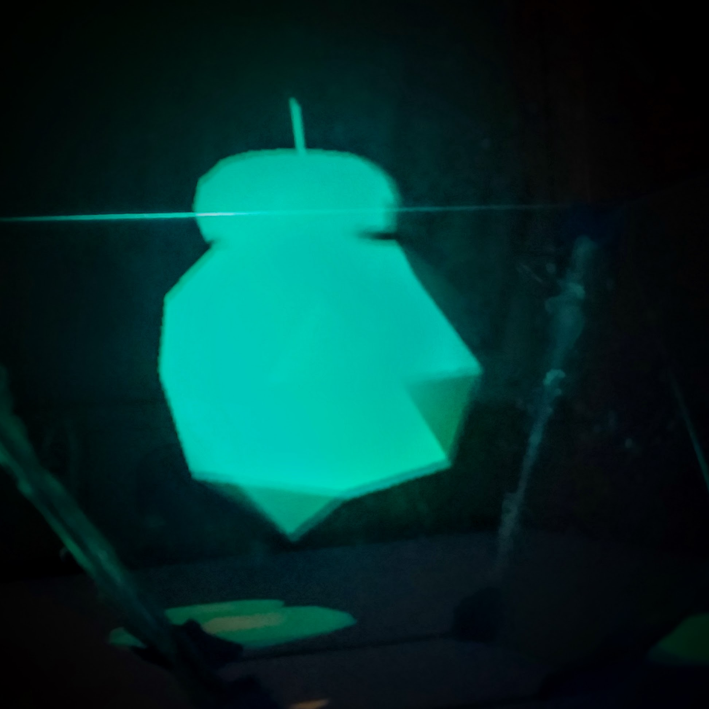

w832
Learning how emulators and assemblers work with a fictional architecture.
RIT Launch Initiative
A team of college students working to launch a rocket 10,000 feet.
I was a member of the Avionics team and worked on the communication system.

wz80
The start of a z80 retrocomputer.

Playing with LEGOs and Working with OpenCV
Playing with LEGOs and Working with OpenCV
Detecting and cropping LEGO backplanes using OpenCV.

Holo
Holo
Projecting a 'hologram' using a computer monitor and a reflective prism made of lexan sheets, including software to render an object on the prism.

avRPN
Attempt at creating a reverse polish notation calculator from an Arduino.
RIT Computer Science House
A collection of students interested in creating projects and learning new things.